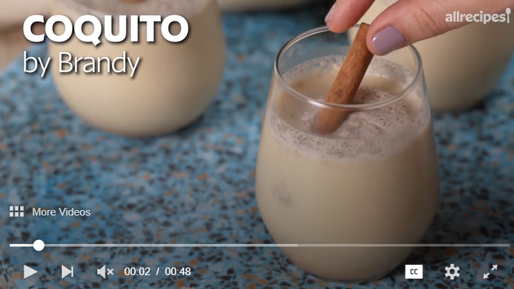

Coquito Recipe

Description
Ingredients
- Evaporated Milk: This coquito recipe starts with a can of evaporated milk.
-
Eggs: Two beaten egg yolks contribute to the rich, thick, and creamy texture.
-
Cream of coconut: Canned cream of coconut lends richness and gives the coquito its signature coconut flavor.
-
Sweetened condensed milk: Sweetened condensed milk makes everything more delicious, including this coquito recipe!
White rum: The best rum for coquito is white Puerto Rican rum, such as Bacardi. In a pinch, any pleasant-tasting white rum will do.
-
-
Water: Water thins the thick and creamy mixture, making it super pourable.
-
Vanilla: A teaspoon of vanilla extract takes the flavor up a notch.
-
Spices: Cinnamon and cloves add warmth and coziness.
Steps
- Cook the evaporated milk and egg yolks in a double boiler until thick.
- Transfer the mixture to a blender and blend with the remaining ingredients.
- Transfer to glass bottles and refrigerator until cold.